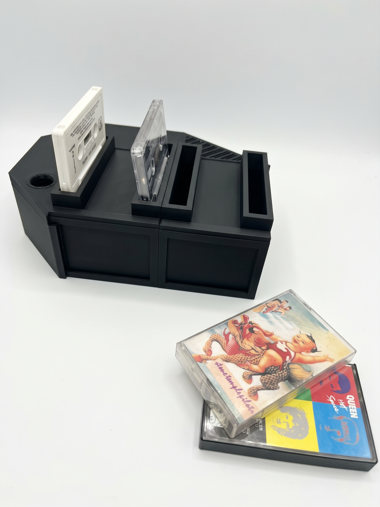

"Cassie"
Un reproductor de música físico interactivo que combina inteligencia artificial, interacción por voz, electrónica, audio y mecanismos físicos.
- ESP32
- LLM AI
- Motores Servo
- Audio
- Modelado 3D
El desafío
Crear a Cassie, un dispositivo interactivo inspirado en un reproductor de cassettes, capaz de integrar inteligencia artificial, reconocimiento de voz y mecanismos físicos para generar una experiencia de interacción tangible.
Cómo lo abordé
Dividí el proyecto en módulos, explorando modelado 3D, electrónica con ESP32, servomotores, reproducción de audio e inteligencia artificial local. Fui probando componentes y resolviendo problemas de integración de forma iterativa.
Qué he aprendido
He aprendido a integrar hardware y software, comprender las limitaciones de los componentes y abordar problemas técnicos de manera autónoma. También he descubierto la importancia de prototipar, experimentar y dividir desafíos complejos en etapas más pequeñas.
